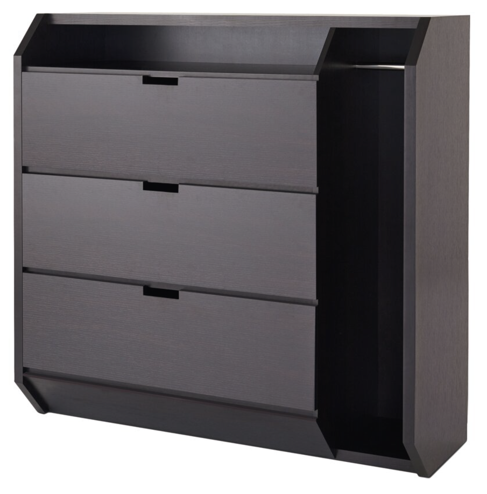
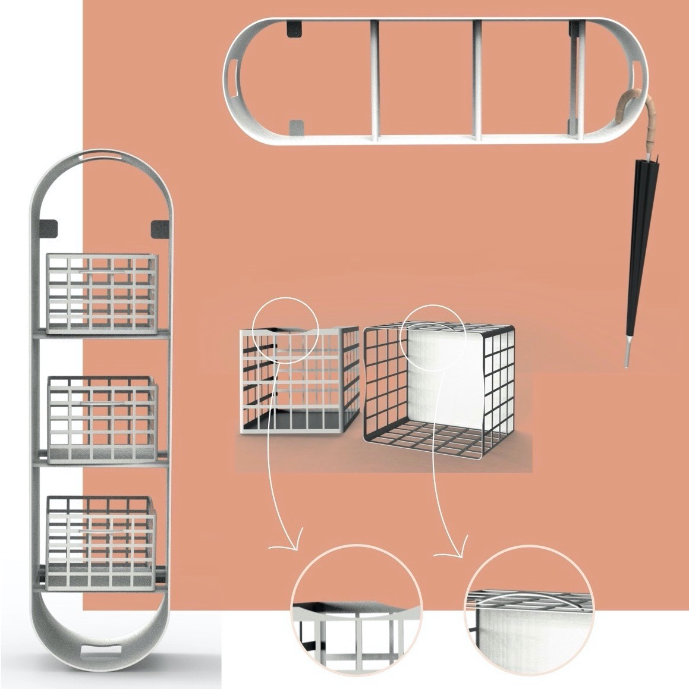

Uma sapateira composta por módulos adquiridos individualmente e conforme a necessidade do utilizador Em cada módulo cabem 3 separadores -também desenvolvidos por nós- em que nos quais cabem 2 pares de sapatos, ou seja, por cada módulo, por norma, o utilizador pode guardar 6 pares de sapatos Para além de guardar o calçado, tem também a função de suportar guarda chuvas nas laterais, sendo que as aberturas que têm este efeito podem também ajudar no reposicionamento do módulo caso o utilizador assim o deseje.

